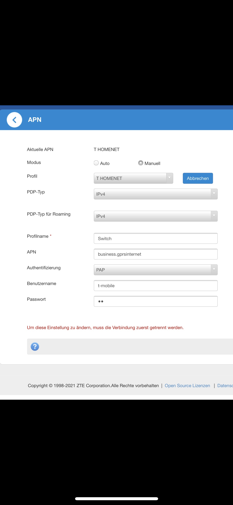

Hallo, ich glaube zu dem Thema gibt es sicherlich unzählige Fragen aber ich habe noch keine mit meiner Wlan Box gefunden - ich habe heute die Internet Flex Box bekommen und kriege es nun nicht hin das meine Switch wieder auf den NAT Typ B kommt. Weiß jemand Rat?
Ich hätte eigentlich alles nach Anleitung eingestellt aber es funktioniert trotzdem nicht. 
Hey @blauewolke7
Du hast laut Screenshot ein Profil mit dem Namen "Switch" angelegt, aber es ist noch das Profil "T HOMENET" aktiv.
Hast du die Eingaben schon über den Button rechts unten gespeichert? (außerhalb des am Screenshot sichtbaren Bereiches)
LG NTM
vor 20 Minuten schrieb NTM:Hey @blauewolke7
Du hast laut Screenshot ein Profil mit dem Namen "Switch" angelegt, aber es ist noch das Profil "T HOMENET" aktiv.
Hast du die Eingaben schon über den Button rechts unten gespeichert? (außerhalb des am Screenshot sichtbaren Bereiches)
LG NTM
Hi
@NTM
habs nun nochmal neu eingegeben, dann die Box ausgesteckt und eingesteckt, die Switch ausgeschaltet und neu verbunden und es geht trotzdem noch immer nicht …
Ich sende dir mal ein Bild zu wie es jetzt aussieht. Hättest du noch einen Tipp für mich?
Vielen Dank für die rasche Antwort!
Bearbeitet von blauewolke7
Ist unter "Erweitere Einstellungen" -> "Firewall" -> "UPnP" die UPnP Option aktiv?
Wenn nicht bitte aktivieren und beide Geräte zur Sicherheit nochmals neu starten.
Erweiterte Einstellungen ist das dunkelblaue Zahnrad unten auf der Startseite.
Bearbeitet von NTMnein hat leider noch immer nicht funktioniert…
ich hatte vorher eine Internet Flex Box B529s und da hats super funktioniert. Heute die MF289D eingesteckt und es geht einfach nicht mehr …
Ich habe s nicht ausdrücklich geschrieben, aber hast du nach dem Aktivieren der UPnP Funktion auch auf "Anwenden" geklickt?
Was ansonsten noch ausprobiert werden könnte:
Auf der Switch unter "Systemeinstellungen"->"Internet" sollteste du unter "Verbindungsstatus" die Zeile MAC-Adresse der Konsole sehen können.
Dann gehe am Router unter "Erweiterte-Einstellungen"->"Routereinstellungen"->ganz unten "MAC-IP Zuweisung".
Aktiviere die Option MAC-IP Zuweisung und klicke auf "Anwenden". Trage dann die MAC-Adresse der Switch sowie eine IP-Adresse im Bereich von 192.168.1.2 bis 192.168.1.254 ein und klicke erneut auf "Anwenden". Nun sollte der Eintrag unten in der Liste aufscheinen. Klicke nun auf "Gerät neu Starten".
Dann nachdem der Router neu gestartet hat, gehe unter "Erweiterte Einstellungen"->"Firewall"->"DMZ". Aktiviere diese Option, trage die IP-Adresse, welche du der Switch vergeben hast, ein und klicke auf "Anwenden".
Dieser Weg sollte nicht dauerhaft genutzt werden, es eher unsicher ist, aber mal zum Ausprobieren.
Wenn auch dies nicht funktioniert dann hat es eher was mit der öffentlichen IP-Adresse.
{kind=link}
{kind=link}